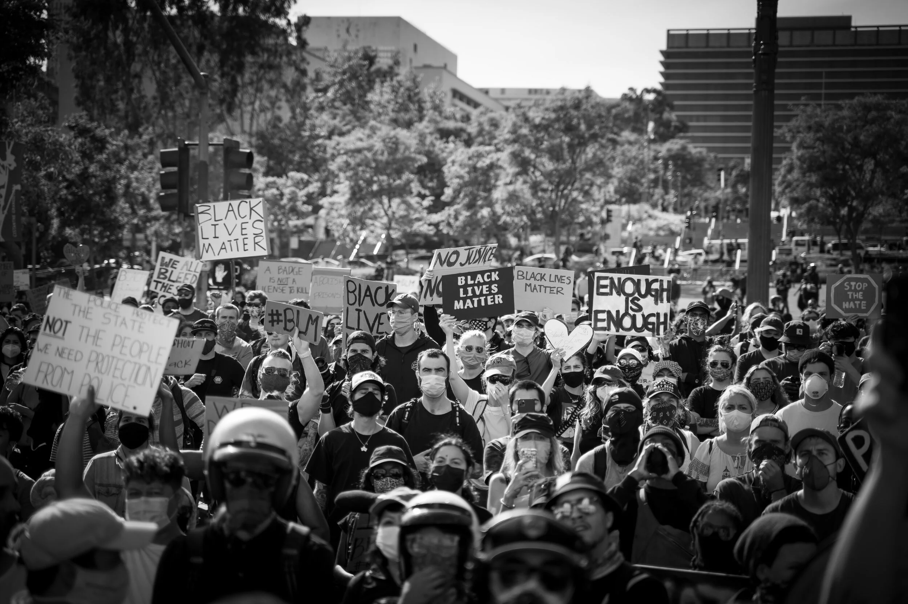
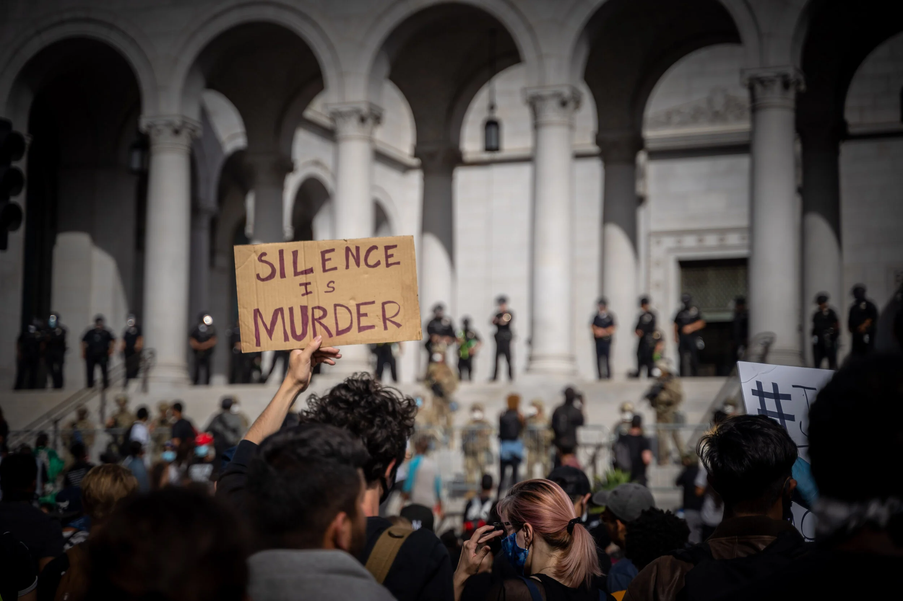
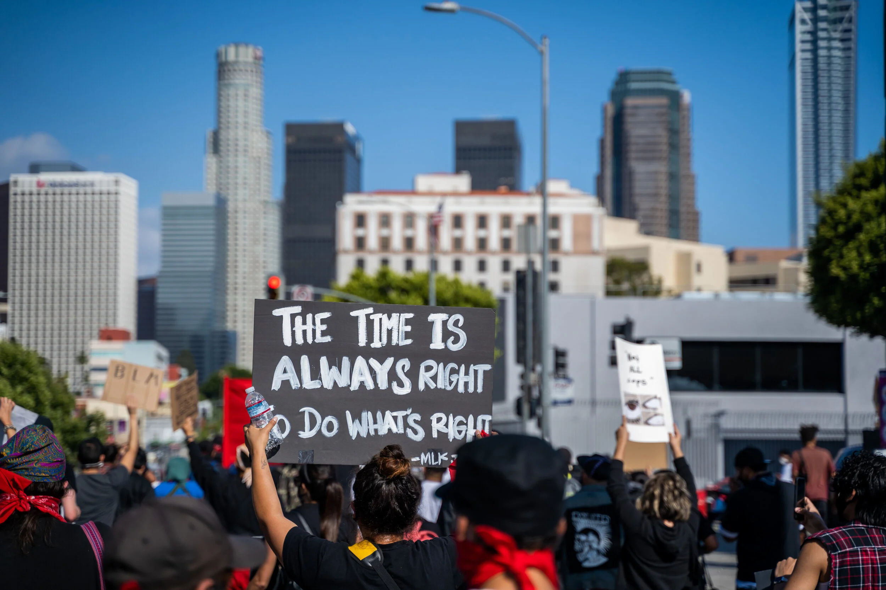

.jpg)
George Floyd
Los Angeles • May – June 2020
Four days after George Floyd was murdered under the knee of a Minneapolis police officer, Los Angeles erupted. Tens of thousands poured into the streets of downtown — first outside LAPD headquarters, then City Hall, then everywhere. I grabbed my camera and went.
These images span four days of protests across downtown LA, from the raw fury of May 28th through the massive marches that followed. The National Guard posted up on the steps of City Hall. Riot police formed lines on Spring Street. And in between, ordinary people held cardboard signs, raised their fists, and demanded to be heard.

What struck me most wasn't the anger — it was the clarity. People knew exactly why they were there. The signs said it all: "Can U Hear Us Now?" "No Justice No Peace." "The Time Is Always Right to Do What's Right." This wasn't chaos. This was a city finally saying what it had been holding in for years.

I kept shooting. Through the tear gas and the chants, through the standoffs and the solidarity. Some moments were defiant, some were tender, and some were just surreal — a pig's head on a stick held up in front of a line of cops, a woman screaming into the void between police and protesters, two kids on bikes with matching signs. All of it real. All of it necessary.
